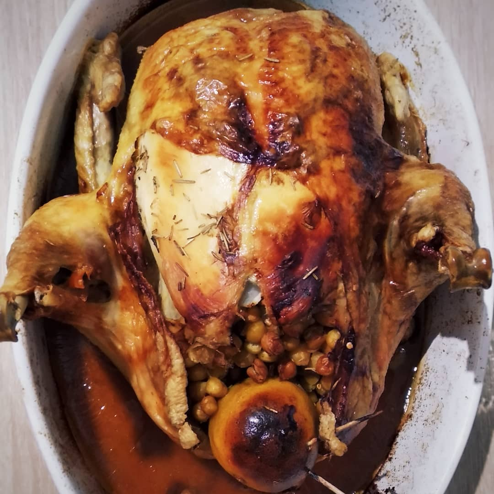

Plnené kurča podľa @gurmanske.cesticky — Normy Jedál
Do zlatista upečené kuriatko plnené cícerom 🍗
Potrebujeme 1 kvalitné kurča
200g sušeného cíceru
125g masla (82%)
Chilli
Citrónová kôra
Citrón
Rozmarín
Olivový olej
Soľ
Cesnak
Sušený cícer uvaríme. Ja to robím takto: najprv cícer varím 3 minúty, zlejem, prepláchnem a zalejem studenou vodou a nechám stáť cez noc. Opäť zlejem vodu, prepláchnem, zalejem čistou vodou, privediem k varu, ešte raz zlejem a prepláchnem a dám variť v čistej vode do mäkka 😉 tak sa zaistí, čo najmenšie nadúvanie 😇
Uvarený cícer zmiešame s nasekanou chilli papričkou, rozmarínom, citrónovou kôrou, soľou a olivovým olejom a naplníme ním kurča. "Otvor" uzavrieme celým citrónom.
Mäkké maslo zmiešame s rozmarínom a natlačíme ho pod kožu na kuracie prsíčka, tak sa nevysušia a budú krásne šťavnaté. Nakoniec celé kurča potrieme tenkou vrstvou masla, aby sme mali chrumkavú kôrku. Dve celé hlavičky cesnaku rozpolíme aj so šupkou, rozrezanou časťou ich uložíme na dno pekáča a na ne položíme kurča. Pečieme v rúre vyhriatej na 180 stupňov cca 2 hodiny. V závislosti od veľkosti kurčaťa.
.
.
.
#dobruchut #jedlo #skvelejedlo #kurca #chicken #kuriatko #pecenekura #pecenekurca #recept #dokonalejedlo #uzasnejedlo #famoznejedlo #bakedchicken #masko #maso #cicer #plnenekurca #cicerovaplnka #varimedoma #peciemedoma #pecemedoma #domacistrava #domacijidlo #domacejedlo